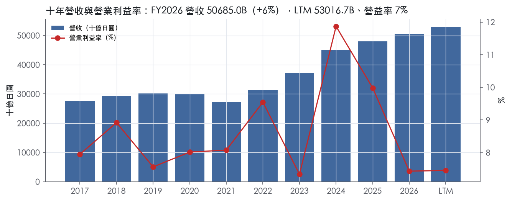
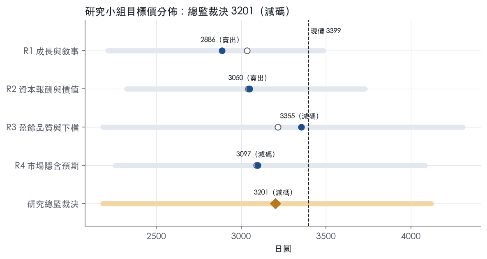
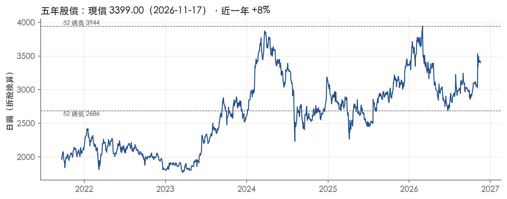

評等總表 › 未分類 › 7203.T
トヨタ自動車（7203.T）
匯率退潮盈餘持平，公允中性減碼｜評等 減碼｜目標價 3201
評等歷史與財報快評
| 報告日 | 評等 | 目標價 | 當時股價 | 超額報酬 |
|---|---|---|---|---|
| 2026-11-17 | 減碼 | 3,201 | 3,399 | -10.7% |
| 2026-11-13 | 減碼 | 3,164 | 3,418 | -12.6% |
| 評等 | 減碼 |
| 12 個月目標價 | 3201 日圓 |
| 現價 | 3399.00 日圓（2026-11-17） |
| 預期報酬 | 股價 -5.8%＋股息 2.9%＝總報酬 -2.9%；日股門檻 7.8%，超額 -10.7% |
| 估值方法 | P/E 10.0x，套在第 5–8 季的EPS（也就是一年後的未來四季） |
| 三情境 | 熊 2186／基準 3234／牛 4119 |
| 研究流程 | 四位研究員兩輪辯論＋研究總監裁決 |
| 資料來源 | EDINET、TDnet、J-Quants、Yahoo、FRED（全免費） |
目錄
第一章 結論摘要
匯率退潮盈餘持平，公允中性減碼（研究總監裁決，四位研究員兩輪辯論後）
評等 減碼｜12 個月目標價 3201 日圓（總監三情境機率加權 3328 與研究員中位數 3073 各半）｜現價 3399.00（2026-11-17）
預期報酬：股價 -5.8%＋股息 2.9%＝總報酬 -2.9%。日股門檻 7.8%，超額 -10.7%。
估值方法：P/E 10.0x，套在第 5–8 季的EPS（也就是一年後的未來四季）。三情境：熊 2186（13%）／基準 3234（61%）／牛 4119（26%）。
立場中性而評等減碼：評等看的是「預期總報酬 -2.9% − 日股門檻 7.8%」＝超額 -10.7%，不是絕對漲跌；中性但超額偏離門檻，代表情境機率或股利把報酬推離門檻。
什麼會讓研究總監改變看法：2027-05 FY2028 計畫營業利益高於 FY2027 實績且買回額度 ≥1,500B，y2 營益率上調到 8%、倍數 11.0x 轉看多；FY2027Q3 北美單季轉虧或原価改善拖累較上半年 △340.0B 擴大，y2 降到 R4 的 7.1%、倍數 9.2x 轉看空。
投資論點
- 匯率紅利退場：上半年匯率貢獻 +685.0B，日圓走向 153，FY2028 上半年轉為逆風。
- 報酬過不了門檻：我們給 10.0x，低於市場的 11.0x，含息總報酬 -2.9%，低於 7.8% 門檻。
- 成本改善是反方：原價改善轉正、買回達 1,500B 以上，盈餘會上修，我們就轉看多。
關鍵數字
| 過去四季（實際，FY2027Q2） | 未來四季 | 第 5–8 季 | 第 9–12 季 | |
|---|---|---|---|---|
| 營收（B） | 53,016.7B | 54,872.2B | 57,067.1B | 59,349.8B |
| 營收成長 | 7.4% | 3.5% | 4.0% | 4.0% |
| 營業利益率 | 7.5% | 7.5% | 7.6% | 7.8% |
| EPS（日圓） | 345.15 | 299.71 | 323.38 | 352.96 |
| EPS 成長 | -2.4% | -13.2% | 7.9% | 9.1% |
| 每股股息（日圓） | — | 0.00 | 0.00 | 0.00 |
| P/E（現價） | 9.8x | 11.3x | 10.5x | 9.6x |
| 股息殖利率（現價） | 2.9% | — | — | — |
過去四季為申報數字；預測為研究總監的假設、程式計算。倍數與殖利率都用現價計算，用來看現價對應各期獲利的高低。
與上次報告比較
| 項目 | 上次（2026-11-15） | 這次（2026-11-16） | 變動 |
|---|---|---|---|
| 評等 | 減碼 | 減碼 | ＝ |
| 機率加權目標價（日圓） | 3,164 | 3,201 | +1.2% |
| 超額報酬 | -12.6% | -10.7% | +1.8 pp |
| 目標倍數 | 11.5x | 10.0x | — |
| 未來四季營收成長 | 4.0% | 3.5% | -0.5 pp |
| 未來四季營益率 | 7.3% | 7.5% | +0.2 pp |
| 未來四季 EPS（日圓） | 253.10 | 299.71 | +18.4% |
| 熊／基準／牛機率 | 18／56／26 | 13／61／26 | — |
程式計算；「未來四季」各自從當次報告的資料起點算。研究總監逐點說明見第八章「與上次報告比較」。
三情境
| 情境 | 機率（歷史） | 故事 | 未來四季營收成長 | 第 5–8 季營益率 | 倍數 | 目標價 | 股價漲跌 |
|---|---|---|---|---|---|---|---|
| 熊 | 13%（9%） | 對應風險表第 1 條（關稅）與第 3 條（損益分岐台數）：本行美國下行路徑（失業率 5.1、Baa 2.30）量縮、北美重回虧損、固定費墊高放大去槓桿、金融事業貸倒上升，日圓 160 僅部分抵銷 | 1.0% | 6.3% | 8.5x | 2186 | -35.7% |
| 基準 | 61%（65%） | 匯率依本行路徑到 153、FY2028 上半年匯率項轉負，FY2027 下半年優於保守計畫，原価改善仍負不擴大，買回 −3%，營益率 7.5%→7.8% | 3.5% | 7.6% | 10.0x | 3234 | -4.9% |
| 牛 | 26%（26%） | 本行基準總經（日圓 153、美國 1.8）下 FY2027Q3 原価改善轉正、FY2028 計畫高於實績並公布 ≥1,500B 買回、關稅轉嫁完成；市場持平 11.0x，盈餘上修不重估 | 6.0% | 8.6% | 11.0x | 4119 | 21.2% |
目標價由程式依研究總監的驅動與倍數計算；機率由研究總監給定。括號內是歷史頻率：把這檔股票過去十年 12 個月報酬的波動形狀，置中在基準情境，結果落在各情境附近的比例。

四位研究員用不同方法各自估值，回應研究總監的質疑後交出第二輪，最後由總監逐點裁決。各研究員的主張見第七章，裁決理由見第八章，完整論證見《研究底稿》。
| 立場（一輪→二輪） | 加權目標價（一輪→二輪） | 評等（一輪→二輪） | 第二輪倍數 | 熊～牛目標價 | |
|---|---|---|---|---|---|
| R1 成長與敘事 | 中性→看空 | 3036→2886 | 賣出→賣出 | 9.9x | 2214～3484 |
| R2 資本報酬與價值 | 看空→看空 | 3043→3050 | 賣出→賣出 | 9.2x | 2326～3730 |
| R3 盈餘品質與下檔 | 中性→看空 | 3216→3355 | 減碼→減碼 | 10.0x | 2186～4306 |
| R4 市場隱含預期 | 看空→看空 | 3089→3097 | 減碼→減碼 | 10.0x | 2258～4082 |
| 研究總監裁決 | 中性 | 3201 | 減碼 | 10.0x | 2186～4119 |
目標價由程式依各自的驅動與倍數計算；評等＝機率加權總報酬 − 日股門檻。
第二章 業務概況
公司做什麼、賣給誰
豐田汽車是以自動車事業為核心、金融事業與資訊通信等其他事業為輔的全球移動（モビリティ）集團，集團正式定位自己是從汽車製造商轉型中的「モビリティカンパニー」。公司由連結子公司602家、關聯公司及共同支配企業159家構成（截至2026年3月31日）。產品線涵蓋轎車、迷你廂型車、小型車、SUV、卡車等車型及其相關零部件與用品的設計、製造與銷售。整車主要由豐田本身、日野自動車（已於2026年4月1日因與三菱扶桑卡車巴士經營整合而從連結子公司範圍剔除）、大發工業製造，部分委外予豐田車體等公司，海外則由豐田汽車製造肯塔基等工廠生產。國內透過TOYOTA MOBILITY東京等全國經銷商銷售，部分大客戶由公司直銷；海外則透過美國豐田汽車銷售等各地銷售公司銷售。LTM口徑（LTM@FY2027Q2）營收53,016.66B、GAAP稀釋EPS 345.15，是一家營收規模五十兆級的全球汽車集團。
業務分部與產品
自動車事業是集團唯一真正的主力引擎，FY2027上半年（2026年4-9月）貢獻外部客戶營收23,981.1B，約佔同期合併營收26,962.4B的89%；同期分部營業利益1,598.2B，較去年同期增加7.6%，增益主因為匯率變動影響。代表車型包括LS、RX、クラウン、カローラ、RAV4、ヤリス、ハイラックス、カムリ、蘭德酷路澤等；FY2026推出第六代改款RAV4，首次搭載軟體開發平台「Arene」，另在中國市場推出本地開發的純電動車「bZ5」，LEXUS則推出全面刷新的第八代「ES」。金融事業為自動車銷售提供分期付款與租賃服務補完，國內由豐田融資等提供，海外由豐田汽車信貸等提供，FY2027上半年營收2,762.0B、營業利益472.3B，較去年同期分別增長18.5%與4.9%，增益主因為融資餘額增加。其他事業主要為資訊通信事業，規模相對小，FY2027上半年營收938.9B、營業利益129.0B，較去年同期分別大增27.6%與87.3%。三個分部的相對規模與成長方向顯示，豐田的盈餘仍高度集中在整車製造與銷售上，金融事業則隨車輛保有量擴大而穩定增長，資訊通信等新業務雖成長快但基數小，短期不足以改變集團損益結構。
客戶、地區與通路
豐田依日本、北美、歐洲、亞洲及其他地區（中南美、大洋洲、非洲、中東）五大區塊披露營收與營業利益。FY2027上半年日本營收11,752.5B、營業利益1,253.3B，較去年同期分別增長11.8%與12.2%，增益主因為匯率變動影響；北美營收11,922.1B、營業利益166.1B，營收年增13.9%、營業利益年增幅度較大，主因為各項費用減少與精簡努力；歐洲營收3,755.6B、營業利益219.2B，分別年增19.4%與9.2%，增益主因為營業面努力；亞洲營收4,677.3B、營業利益437.1B，營收年增5.1%但營業利益年減1.6%，減益主因為各項費用增加；其他地區營收2,658.2B、營業利益200.9B，營收年增14.2%但營業利益年減0.5%，減益主因為銷售面影響。銷量端，FY2027上半年合併銷量475萬8千台，較去年同期減少2.1萬5千台（0.5%）；日本銷量102萬4千台、年增5萬4千台（5.6%），海外銷量373萬4千台、年減7萬9千台（2.1%）。通路面，豐田長期持有與通信、金融業者的政策保有股以維繫供應鏈與客戶關係：對KDDI的帳面計上額989.6B、NTT 317.4B、MS&AD保險集團283.7B、三菱UFJ金融集團266.7B、鈴木180.0B，理由分別是車聯網通訊合作、智慧城市平台、車聯網保險開發、銷售金融業務關係與商品共同開發／OEM供應。
最近四季發生了什麼
過去四個季度營收穩健成長但獲利波動明顯，核心問題是損益分岐台數上升。FY2026Q3（2025年10-12月）營收13,456.85B、年增8.6%，營益率8.9%。FY2026Q4（2026年1-3月）營收12,597.35B、年增僅1.9%，營益率驟降至4.5%，淨利817.21B、EPS 62.70。FY2027Q1（2026年4-6月）營收13,525.40B、年增10.4%，營益率回升至7.9%，淨利1,477.04B、EPS 120.69。FY2027Q2（2026年7-9月）營收13,437.06B、年增8.6%，營益率8.4%，淨利759.40B、EPS 65.28。2026-11-05決算短信揭露FY2027上半年合併口徑：營業收益26,962.4B、年增9.5%；營業利益2,191.1B、年增9.2%；稅前中間利益2,954.4B、年增19.2%；歸屬母公司中間利益2,236.4B、年增26.1%；營業利益增減因素為營業面努力+165.0B、匯率變動影響+685.0B、成本改善努力-340.0B、雜費增減-20.0B、其他-304.6B。現金流方面，營業活動現金流1,603.9B，較去年同期2,944.6B減少1,340.6B；投資活動現金流-535.3B，較去年同期-3,517.5B的流出幅度縮小2,982.2B；融資活動現金流-4,207.8B，較去年同期-362.0B大幅擴大流出3,845.8B，主因為自家股票買回3,851.9B。資產負債表端，總資產101,980.7B較上一會計年度末減少3,541.5B（3.4%），負債63,674.3B減少827.8B（1.3%），資本38,306.3B減少2,713.6B（6.6%），現金餘額9,484.4B減少3,175.1B（25.1%），主因庫藏股買回與持有股票出售。公司FY2027全年計畫為營收53,500.00B、營業利益3,900.00B、稅前利益4,960.00B、歸屬母公司淨利3,570.00B、EPS 299.95日圓；上半年已實現營業利益2,191.1B，佔全年計畫的56%，而LTM營收53,016.66B已接近全年計畫的53,500.00B。
公司自己說的成長引擎與策略
公司將經營基本方針稱為「トヨタ基本理念」，並以「幸せを量産する」為使命，「もっといいクルマづくり」搭配TNGA商品軸經營與「その町いちばんのクルマ屋」地域軸經營為兩大支柱。2025年10月東京車展上新增「センチュリー」品牌，定位為「向世界發出日本自尊的品牌」。公司明確承認「足元では、損益分岐台数が大きく上昇しています」，原因是人員與未來投資擴大加上美國關稅影響，對策是全公司固定費檢討、原價改善與AI導入以提升生產效率。SDV（Software Defined Vehicle）被列為モビリティカンパニー變革的領頭角色，目的是實現交通事故零社會，需要「車・人・基礎設施」三位一體，軟體平台「Arene」是載體之一。Toyota Woven City於2025年9月正式啟動，2026年4月再啟用「Woven City Inventor Garage」，定位為新產品與服務的「移動測試場」。資本配置上，公司持續縮減政策保有股——上市標的從2022年3月末的53家降至2026年3月末的34家，帳面額對連結淨資產比重降至8.1%（bs政策保有股比重.FY2026對照有報揭露），並於FY2027上半年執行3,851.9B的庫藏股買回，呼應東證要求日股公司改善資本效率與股東回報的政策方向。整體看，豐田的敘事是「用商品軸＋地域軸的硬底子換現金流，再把現金流投入SDV與Woven City這類軟體與未來事業，同時用庫藏股與交叉持股處分回應東證式資本效率要求」。FY2026Q4營益率驟降到4.5%顯示損益分岐台數惡化是真實風險，而非公司話術，FY2027上半年回升到8%左右主要靠日圓貶值的匯率紅利而非結構性成本改善，投資人應將當前全年計畫3,900.00B的營業利益目標視為偏保守但品質存疑的基準。

第三章 經濟護城河
結論：無，趨勢變窄
按本章定義，豐田的經濟護城河評為「無」，因為量化底稿顯示 ROIC 有資料的 7 年中高於資本成本 0 年，我們沒有把握未來 5 年 ROIC 能穩定高於資本成本。這不代表豐田沒有競爭優勢：它在量產成本與品牌殘值上領先同業，但這些優勢沒有轉化成合併層級的超額資本報酬。趨勢判為變窄，理由有三：公司自承損益分岐台數大幅上升，最新 ROIC 低於十年平均，最新營益率也低於十年平均。
優勢來源
豐田的優勢只成立在「成本優勢」與「無形資產」兩類；轉換成本、網路效應、效率規模三類缺乏具體證據，不列入。
成本優勢：公司以 TNGA 推行車系「群戦略」的商品軸經營，搭配地域軸經營，穩健建立了強固的收益基礎。FY2026 研發支出 1,522,881M 日圓，其中自動車事業 1,507,038M 日圓。同年設備投資合計 2,390,659M 日圓。供應鏈方面，豐田持有電裝 22.26%、愛信 22.37%、豐田紡織 32.45% 的表決權。大規模攤提研發與設備，加上集團化的零件供應網，構成同業難以複製的成本結構。
無形資產（品牌與殘值）：公司指出，強勢品牌支撐的多樣商品形成龐大的全球保有車隊；維修容易度、補給零件供應力與高水準的殘值，讓服務、金融、中古車、保險等環節持續創造價值。高殘值壓低消費者的實質持有成本，也壓低金融事業的殘值風險，是品牌溢價最具體的經濟表現。
數字上看得到嗎
數字看不到超額報酬，這和「有護城河」的主張直接衝突，也是本章評為「無」的主因。ROIC 十年平均 4.9%、最高 7.0%、最低 3.8%，資本成本代理值 10.2%，平均利差 -5.2%。
穩定性的數字則偏正面：
- ROIC 標準差 1.0%。
- 營業利益率十年平均 8.7%、標準差 1.4%、最低 7.3%，在循環性產業中屬窄幅波動。
- ROE 十年平均 11.5%、最低 9.0%。
衝突有兩個口徑因素可部分解釋：
- 合併 ROIC 的投入資本含金融事業的融資與租賃資產，FY2026 淨負債 30,545.85B 日圓（資料包年度表 FY2026），會壓低 ROIC。
- 資本成本代理值看來以美債 10 年 5.15%為基礎；若改用日債 10 年 2.841%，門檻會較低。
即使計入這兩點，ROIC 最高年也只有 7.0%，仍無法確認存在穩定的超額報酬，因此不上修為窄。最新值也全面低於平均：ROIC 4.3%、營益率 7.4%，FY2026Q4 單季營益率 4.5%。
什麼會侵蝕它
最大的侵蝕來源是成本優勢本身正在被削弱。公司表示，人員投資與未來投資擴大，加上美國關稅影響，足下損益分岐台數大幅上升。北美統括公司 FY2026 稅前損失 △544,523M 日圓。美國製造子公司處於債務超過，其中肯塔基 680,163M 日圓、印第安納 651,546M 日圓。
FY2027 上半年營業利益的增減因素中，匯率變動影響 +685.0B 日圓，成本改善努力則為 -340.0B 日圓。換言之，近期獲利回升靠匯率，不是靠成本護城河。
第二個侵蝕來源是價值重心轉向 SDV 與軟體。豐田以 Arene 平台與電子平台刷新因應，但那是建設中的能力，不是既有優勢。
對估值的含意
目標倍數相對同業應持平，不給溢價，因為豐田的成本與品牌優勢未能轉化為高於資本成本的 ROIC，且趨勢變窄。目前 P/E 9.8x，接近自身 5 年中位數 9.9x，我們不建議用接近 5 年 P90 11.7x的倍數。只有在損益分岐台數的改善實際反映到 ROIC 回到十年高點 7.0%附近時，才重新檢討溢價。
量化底稿：報酬率與利潤率的水準與穩定度
| 指標 | 最新 | 十年平均 | 標準差 | 最低 | 最高 |
|---|---|---|---|---|---|
| ROIC | 4.3% | 4.9% | 1.0% | 3.8% | 7.0% |
| 營業利益率 | 7.4% | 8.7% | 1.4% | 7.3% | 11.9% |
| FCF 利潤率 | 5.8% | 4.8% | 1.7% | 2.8% | 7.6% |
| ROE | 10.1% | 11.5% | 2.2% | 9.0% | 15.8% |
程式計算。資本成本代理值（10 年債＋5%）：10.2%；ROIC 平均減資本成本：-5.2%；ROIC 有資料的 7 年中，高於資本成本 0 年。
第四章 財務體質與盈餘品質
結論：中品質，現金轉換弱於十年均值且槓桿偏高，但主因可用金融子公司會計結構與高資本支出解釋，非盈餘造假或應計堆積。
現金有沒有跟上盈餘
LTM 營業現金流／淨利為 0.96x，低於十年均值 1.35x，近三年平均 1.02x 介於中間，顯示現金轉換正在走弱但尚未脫離軌道（黃燈）。扣掉資本支出後的自由現金流／淨利 LTM 僅 0.39x，近三年平均 0.49x，十年均值 0.61x，三個視窗全部落在紅燈區（紅燈）。拉開有報數字看，FY2026 自動車等（非金融）部門營業活動現金流由 4,736.61B 增至 5,479.38B，主因是法人所得稅支付減少 1,260.7B。但同一年資本的支出（含賃貸資產）維持高位，從 5,991.2B 到 6,059.7B，與前一年度相當（前年度並み）。换算成占營收比重，資本支出／營收 FY2026 為 5.0%，持續偏高，這是重資產汽車製造加上租賃車隊擴張的結構性特徵，不是單一年度的異常支出。應計比率（(淨利−CFO)／平均總資產）LTM 僅 0.2%，近三年 0.1%，十年均值甚至是負的 -1.1%（黃燈），遠低於 5.0% 紅線，說明盈餘品質本身沒有靠應計項目灌水，現金轉換變弱的根因是資本支出與金融業務擴表，不是會計操縱。
公司調整了什麼（GAAP 與非 GAAP 的差距）
豐田不像美股公司常見那樣提供調整後 EPS 或剔除 SBC／攤銷的 non-GAAP 利潤，決算短信與有報揭露的是「營業利益増減要因」拆解表，這是 GAAP 營業利益本身的變動橋接，不是盈餘美化工具。FY2026 全年營業利益年減 1,029.3B（百萬円口徑 △1,029,300），拆解為營業面的努力 +710.0B、原價改善的努力 △120.0B、匯率變動影響 △195.0B、諸經費的增減・低減努力 △2,030.0B、其他 +605.7B。半年期（H1 FY2027）同一張表方向完全相反：匯率變動影響轉為 +685.0B，原價改善努力卻轉負 △340.0B，諸經費減損 △20.0B，其他 △304.6B。這代表營業利益裡匯率貢獻的波動幅度極大（一年內從 -195B 擺動到半年 +685B），這塊是管理層無法控制的外生變數，估值時應該用平均匯率假設做情境分析，不宜直接外推最近一期的高基數。另外，資本變動表附註顯示豐田自動織機股權出售與日野自動車解除子公司認列的影響計入「其他資本構成要素」與資本公積的調整（注1、注2），這屬於一次性股權結構調整，不應計入經常性盈餘品質評估。沒有看到 SBC 加回項目，量化計分表裡 SBC／營收與利息保障倍數顯示「—」，因為 IFRS 財報把股權薪酬與利息費用併入金融與銷管費用科目、未單獨揭露，這是日股／IFRS 揭露習慣造成的資料缺口，不代表公司隱藏費用。
資產負債表與資本配置
淨負債 33,715.33B，企業價值 73,669.72B，槓桿看起來偏高，但拆開資產負債表可以看到絕大部分有息負債來自金融事業：半年報顯示金融事業流動＋非流動有利子負債合計為 17,554.663B＋25,645.156B＝約 43.2B百萬円等級（即逾 43,200B 日圓的對應金融資產負債規模），相對地自動車等（本業製造）部門流動＋非流動有利子負債僅 976.235B＋1,823.843B（FY2026 期末），差距懸殊。金融事業的負債對應的是金融事業に係る債権（融資與租賃應收款，FY2026 期末合計 38,966.6B，年增 15.9%），本質是資產負債兩邊同步擴張的金融中介業務，不是本業舉債買資產。信用評等維持 S&P A+、Moody's A1、R&I AAA（2026年5月31日），顯示信評機構並未把這個槓桿結構視為違約風險升高的訊號，這是對沖量化紅燈的重要旁證。資本配置方面，H1 FY2027 自己股票取得（庫藏股）高達 3,851.89B，遠超過前年同期的 39.96B，並辦理了庫藏股消却（利益剰餘金轉資本公積 2,460.47B），顯示公司在積極響應東證對 PBR 改善與股東回報的要求。股利支付 H1 FY2027 為 651.70B（親公司股東部分），（股利＋回購）／淨利 LTM 28.7%，近三年平均 24.6%（黃燈），比率不算激進，仍有再提升空間，不構成舉債回饋的警訊。
紅旗逐條說明
自由現金流／淨利 紅燈（LTM 0.39x，近三年均值 0.49x）：真實但可解釋——FY2026 資本支出（含租賃資產）6,059.7B 與前年度並み維持高檔，加上金融事業租賃資產購入與融資債權持續增長，是資本密集產業＋自營金融業務的結構性特徵，而非一次性支出暴增，估值上應長期打折現金流而非視為單年度異常。
淨負債／EBITDA 紅燈（LTM 5.19x，近三年均值 4.28x）：屬會計口徑造成的假警報成分居多——金融事業有息負債（約 43.2B 兆円等級）對應融資與租賃應收款資產，本業（自動車等）負債僅約 2.8B 等級，用合併口徑的淨負債／EBITDA 衡量豐田本業槓桿會系統性高估風險，信評機構給予的最高評級（S&P A+、Moody's A1、R&I AAA）佐證市場並未把此視為違約風險升高。
營業現金流／淨利 黃燈、應計比率 黃燈：應計比率十年均值甚至是負值（-1.1%），LTM 僅 0.2%，遠低於紅線，顯示盈餘沒有被應計項目灌水，現金轉換走弱是資本支出與金融資產擴張稀釋了現金，不是盈餘品質惡化。
（股利＋回購）／淨利 黃燈：28.7% 低於綠燈 50% 門檻，但考慮到 H1 FY2027 庫藏股買回已大幅加碼至 3,851.89B，全年化後比率可能明顯上修，屬於時間點落差而非股東回饋意願不足。
SBC／營收、利息保障倍數「—」：IFRS 揭露未單獨列示股權薪酬與利息費用科目，屬資料缺口，非紅旗。
對估值的含意
估值應以 GAAP 淨利為主軸，但對 FY2026～FY2027 的營業利益要扣除匯率波動部分（FY2026 全年 △195.0B、H1 FY2027 +685.0B 的劇烈擺動）做正常化處理，不宜直接外推近一期高基數。自由現金流持續低於淨利（0.39x–0.61x）反映資本密集本質，應對 FCF 殖利率（目前 4.2%）打一定折扣再做跨產業比較，但不需要對 GAAP 淨利本身打折，因為應計品質良好。淨負債／EBITDA 的高槓桿主要來自金融子公司資產負債表擴張，不應直接套用製造業槓桿倍數上限去壓估值倍數，但在敏感性分析中仍應揣摩金融利差或信用成本惡化情境下對合併 EBITDA 的衝擊。
量化底稿：盈餘品質計分表
| 項目 | LTM | 近三年 | 十年 | 燈號 | 規則 |
|---|---|---|---|---|---|
| 營業現金流／淨利 | 0.96x | 1.02x | 1.35x | 黃 | ≥1.00x 綠、<0.80x 紅 |
| 自由現金流／淨利 | 0.39x | 0.49x | 0.61x | 紅 | ≥0.90x 綠、<0.60x 紅 |
| 應計比率（(淨利−CFO)／平均總資產） | 0.2% | 0.1% | -1.1% | 黃 | ≤0.0% 綠、>5.0% 紅 |
| SBC／營收 | — | — | — | — | ≤3.0% 綠、>8.0% 紅 |
| 淨負債／EBITDA | 5.19x | 4.28x | 4.48x | 紅 | ≤1.50x 綠、>3.00x 紅 |
| 利息保障倍數（營業利益／利息） | — | — | — | — | ≥8.00x 綠、<3.00x 紅 |
| 稀釋股數年變動 | -1.7% | -1.5% | -1.7% | 綠 | ≤0.0% 綠、>3.0% 紅 |
| （股利＋回購）／淨利 | 28.7% | 24.6% | 26.7% | 黃 | ≥50.0% 綠、<0.0% 紅 |
程式計算；燈號以 LTM（無則近三年平均）判定。
- 程式紅旗：自由現金流／淨利 紅燈（LTM 0.39x，近三年平均 0.49x）
- 程式紅旗：淨負債／EBITDA 紅燈（LTM 5.19x，近三年平均 4.28x）
第五章 主要風險
結論：豐田當期獲利的最大變數不是需求疲弱，而是「日圓貶值紅利撐住了營益率，而本業損益分岐台數正在惡化」——一旦匯率反轉或美國關稅成本無法轉嫁，FY2026Q4營益率曾跌到4.5%的情境會重演。
五大風險表
| 風險 | 觸發指標（看什麼數字、在哪裡看） | 對 EPS 的影響方向與粗略幅度 | 未來 12 個月發生機率（高／中／低） | 出處 |
|---|---|---|---|---|
| 美國關稅與貿易政策 | 美國對日系車關稅稅率公告、USTR/經產省公告、北美分部營益率（決算短信季揭露） | 負向；已實質推升當社製品成本並可能抑制需求，幅度未揭露具體金額 | 高 | |
| 匯率波動（日圓兌日圓） | usdjpy（FRED，＝159.93）、決算短信「營業利益增減要因」中的匯率變動項 | 負向（日圓升值時）；FY2027上半年匯率變動貢獻營業利益+685.0B，是最大單一增益項，反向波動時衝擊同等量級 | 中 | |
| 損益分岐台数上升／本業獲利結構惡化 | 各季營益率（is.operating_margin）、尤其是剔除匯率後的「原価改善の努力」「諸経費」項 | 負向；FY2026Q4營益率已滑落至4.5%，FY2027上半年原価改善努力項為-340.0B | 中 | 依資料包與決算短信交叉判斷 |
| 原材料價格上升轉嫁能力不足 | 鋼鐵、貴金屬、非鐵金屬（鋁等）、樹脂類原料價格指數；毛利率變化 | 負向；若無法充分轉嫁至售價，將侵蝕未來獲利能力 | 中 | |
| 仕入先（供應鏈）依賴特定供應商 | 一次仕入先集中度揭露、地政學緊張或制裁相關公告、生產延遲／停工公告 | 負向；特定仕入先無法供應將造成生產延遲、停止或成本增加 | 低 |
逐條說明
美國關稅與貿易政策是機率最高、已經在發生的風險。公司明確寫出「2025年對美輸出關稅大幅提高，且目前仍維持高關稅率」，並承認這會推升產品成本、可能使未來需求放緩，衝擊不限於美國。北美分部FY2027上半年營收年增13.9%但營業利益僅166.1B，增益主因是「諸経費の減少・低減努力」而非營業面擴張，顯示北美獲利仍在用成本壓縮對抗關稅侵蝕，而非需求面改善。監測方法：每季決算短信北美分部營益率，以及美國政府關稅公告時間點。
匯率是當期帳面獲利最大的單一槓桿，但方向可逆。決算短信揭露的「營業利益增減要因」中，匯率變動貢獻+685.0B，遠大於營業面努力的+165.0B，而原価改善努力反而是-340.0B。換言之，FY2027上半年營業利益年增9.2%，主要是日圓貶值撐出來的，不是本業效率提升。一旦美日利差收斂、日圓轉強，這一項會從正貢獻變負貢獻，且幅度級距相近。監測方法：FRED usdjpy 對比公司短信內的匯率假設（想定為替レート，本期資料包未揭露具體假設值，需留意下期短信補充）。
損益分岐台数上升是公司自己承認、但沒有量化到底多嚴重的結構性風險。有報經營方針明確寫「足元では、損益分岐台数が大きく上昇しています」，原因是人員與未來投資擴大加上美國關稅影響。這句話不是免責條款式的空話，而是能在財報上直接驗證：FY2026Q4營益率曾滑落到4.5%，遠低於FY2026Q1~Q3的6.8%~9.5%區間（~Q3）。FY2027上半年回到8%左右區間，主要靠匯率紅利撐住，而非結構性成本改善（原価改善の努力為負值）。若匯率紅利消失，營益率有重新探底到4~5%區間的風險。監測方法：每季營益率與決算短信「營業利益增減要因」中「原価改善の努力」「諸経費」兩項的正負號。
原材料價格上升是傳統但持續存在的成本風險。公司列出鋼鐵、貴金屬、非鐵金屬（鋁等）、樹脂相關部品的原料價格上升會推升部品代與製造成本，若未能充分轉嫁至售價，將侵蝕未來收益性。此風險沒有具體數字可引用，但方向明確、且與前述關稅成本上升疊加時會放大效果。監測方法：主要金屬原料價格指數、毛利率變化（資料包目前毛利率欄位為空，需待補充揭露）。
仕入先依賴是機率較低但一旦發生衝擊較大的尾部風險。公司特別點出即使一次仕入先分散，若二次以降仕入先集中，仍可能因地政學緊張或政府制裁而斷供，造成生產延遲、停止或成本增加。業務概況章未揭露具體供應商集中度數字，故此項仍以原文定性描述為主，列為機率低但不可忽視的尾部風險。監測方法：地政學緊張相關新聞、特定零組件（如半導體、電池材料）供應中斷公告。
公司沒寫、但我們認為該注意的
庫藏股買回與政策保有股處分的節奏，可能掩蓋本業現金流惡化。FY2027上半年財務活動現金流淨流出4,207.8B，主因是自家股票買回3,851.9B，同期營業活動現金流僅1,603.9B，較去年同期2,944.6B減少1,340.6B。現金餘額從12,659.6B降至9,484.4B、減少25.1%。若本業現金流持續弱於去年同期，而公司仍維持大規模庫藏股買回以回應東證資本效率要求，資本結構的安全邊際會被壓縮，這點10-K風險章完全沒提到。
金融事業規模擴大本身是隱藏的信用與利率風險，但原文只當成競爭風險處理。金融事業FY2027上半年營收2,762.0B、年增18.5%，營業利益472.3B，增益主因為「融資餘額增加」，意味著資產負債表上「金融事業に係る債権」持續擴大（流動+非流動合計自25,488.2B+13,478.5B區間持續成長，見財政狀態計算書）。公司原文只把金融事業風險寫成「競爭激化導致利益率下降」，但沒有特別點出融資餘額擴大本身會放大利率上升與中古車殘值下跌時的貸倒損失曝險，這是我們認為需要額外追蹤的風險。
第六章 市場在定價什麼
現價 3399.00 對應 trailing（過去四季）P/E 9.8x、EV/EBITDA 11.3x、EV/EBITA 18.6x、EV/Sales 1.4x、FCF 殖利率 4.2%。主要估值倍數 P/E 現在 9.8x，落在5 年區間第 48 百分位（P10／P50／P90 = 7.3x／9.9x／11.7x）。

把程式的機械基準預測放到現價下，市場付的前瞻倍數是：P/E（未來四季） 11.0x、P/E（第 5–8 季） 9.9x。反推 DCF 顯示市價隱含未來五年營收年成長 9.1%（WACC 9.0%、終值成長 3.0%、FCF 利潤率 5.7%，SBC 不加回）。
| 倍數 | 現在 | 5 年 P10 | 5 年 P50 | 5 年 P90 | 現在分位 | 全期 P50 |
|---|---|---|---|---|---|---|
| P/E | 9.8x | 7.3x | 9.9x | 11.7x | 48.0% | 10.1x |
| EV/EBITDA | 11.5x | 8.5x | 10.6x | 11.6x | 85.3% | 10.8x |
| EV/EBITA | 18.9x | 11.8x | 16.5x | 19.6x | 77.0% | 16.9x |
| EV/EBIT | 18.9x | 11.8x | 16.5x | 19.6x | 77.0% | 16.9x |
| EV/Sales | 1.4x | 1.3x | 1.5x | 1.6x | 29.2% | 1.5x |
| P/S | 0.8x | 0.7x | 0.8x | 1.0x | 23.2% | 0.8x |
| P/FCF | 24.5x | 13.8x | 18.5x | 25.1x | 87.7% | 18.8x |
trailing 倍數（股價 ÷ 過去四季）；分位以每個交易日計算。
（日股同業籃尚未建置：評等門檻用日股絕對門檻＝日本 10 年公債＋股權風險溢酬 5%，見首頁。）
事後實現前瞻倍數帶（P/E，2018-11-21..2025-11-19）：P10／P50／P90 = 6.2x／8.8x／12.2x。它是每個交易日的股價除以之後四季實際實現的指標；一年後，今天的第 5–8 季正是那時的未來四季，所以這條帶是 12 個月目標價的同口徑倍數。因為用的是事後實際而非當時預期，過去成長超乎預期的公司這條帶會偏低。
程式的機械基準（成長率從過去四季年增率三年收斂到 6%、利潤率持平）用 事後實現前瞻 P/E P50 估值得到 3037（-10.6%），市場現行前瞻倍數（現價 ÷ 基準 未來四季指標）一年後持平，套在基準 第 5–8 季指標得到 3778。這兩個數字只是參考點，不是本報告的目標價；研究員對這個定價的回應在第七章。
第七章 四位研究員的看法
下表是每位研究員第一輪（各自獨立）與第二輪（回應研究總監的質疑後）的結果。目標價全由程式依各自的假設計算。
| 立場（一輪→二輪） | 加權目標價（一輪→二輪） | 評等（一輪→二輪） | 第二輪倍數 | 熊～牛目標價 | |
|---|---|---|---|---|---|
| R1 成長與敘事 | 中性→看空 | 3036→2886 | 賣出→賣出 | 9.9x | 2214～3484 |
| R2 資本報酬與價值 | 看空→看空 | 3043→3050 | 賣出→賣出 | 9.2x | 2326～3730 |
| R3 盈餘品質與下檔 | 中性→看空 | 3216→3355 | 減碼→減碼 | 10.0x | 2186～4306 |
| R4 市場隱含預期 | 看空→看空 | 3089→3097 | 減碼→減碼 | 10.0x | 2258～4082 |
| 研究總監裁決 | 中性 | 3201 | 減碼 | 10.0x | 2186～4119 |
目標價由程式依各自的驅動與倍數計算；評等＝機率加權總報酬 − 日股門檻。
分歧度：第一輪 加權目標價 3036～3216（區間＝現價的 5%）· 倍數 9.2～10x · 立場 中性×2、看空×2；第二輪 加權目標價 2886～3355（區間＝現價的 14%）· 倍數 9.2～10x · 立場 看空×4（方向一致）。

| 研究員 | 第二輪主張 | 堅持的理由 |
|---|---|---|
| R1 成長與敘事 | 偏空，倍數 9.9x，取五年中位數；營收成長 2.5%，營益率 7.2%。 | 倍數不再下壓；成長降檔已進盈餘，再壓倍數等於罰兩次。 |
| R2 資本報酬與價值 | 偏空，倍數 9.2x；ROIC 低於資本成本，營收成長 2.0%。 | 盈餘下修是結構性的，他拒絕付市場看穿下修的溢價。 |
| R3 盈餘品質與下檔 | 偏空，倍數 10.0x；營收成長 3.5%，營益率由 7.5% 升到 7.8%。 | 政策保有股仍占淨資產 8.1%，撐住每年 -3% 的股數縮減。 |
| R4 市場隱含預期 | 偏空，倍數 10.0x；關稅與原料壓低第二年營益率到 7.1%。 | 市場假設匯率紅利延續；北美上半年營業利益只有 166.1B。 |
每位研究員的逐條回應與完整論證見《研究底稿》（7203.T_研究底稿_2026-11-16.docx）。
第八章 研究總監裁決
分歧登記
| 分歧點 | R1 | R2 | R3 | R4 | 什麼資料會分出勝負 |
|---|---|---|---|---|---|
| NTM 營收成長 | 2.5%：計畫隱含下半年僅低個位數、日野出表、匯率逆風 | 2.0%：同 R1，FY2028 上半年只給約 2% | 3.5%：計畫保守、金融事業 +18.5%、量未崩 | 4.0%：日野方向更正後數字未動 | 2027-02 上旬 FY2027Q3 短信：單季營收對 13,456.85B年增 ≥3% 判 R3，≤0 判 R1／R2 |
| NTM 營益率 | 7.2%：匯率逆風、原價改善仍負 | 7.4%：照 LTM 持平 | 7.5%：下半年優於保守計畫、FY2028 上半年轉小逆風 | 7.3%：+685.0B 高基數在 NTM 內被比較 | FY2027Q3 單季營益率 ≥7.5% 且 FY2027Q4 不重演 4.5% 判 R3 |
| Q5–Q8 營益率 | 7.4%：只給不再惡化 | 7.8%／y3 8.0%：成本改善回歸 | 7.6%／y3 7.8%：緩慢修復 | 7.1%／y3 7.5%：關稅＋原料抵銷匯率移出 | 2027-05 FY2028 期初計畫營業利益與想定匯率；FY2027Q3 橋接「原価改善の努力」正負號 |
| 股數年變動 | −2.0%：3,851.9B 一次性 | −3.5%：本業有買回能力 | −3.0%：政策保有股池 8.1% 撐常態以上 | −2.5%：現金減 25.1% 不能重複 | 2027-05 FY2028 自己株式取得上限：≥1,500B 判 R2／R3，約 1,000B 判 R1 |
| 目標倍數 | 9.9x eps@ntm：5y trailing P50，無理由偏離 | 9.2x eps@q5_q8：拒付看穿溢價 | 10.0x eps@q5_q8：P50–P75 間 | 10.0x eps@q5_q8：低於市場持平 11.0x 的理由是 ROIC、損益分岐台數、北美薄利 | 2027-05 市場對 FY2028 計畫 EPS 付的倍數 ≥11x，表示溢價不退、我們太低 |
逐點裁決
一、NTM 營收成長：選 R3 的 3.5%。 R1、R2 用計畫 53,500.00B 減上半年 26,962.4B 推得下半年僅低個位數成長，這是把保守計畫當事實：LTM 營收 53,016.66B已接近全年計畫，現行匯率 159.93比日本前提「現在」欄 158.2 更弱，153 要到 2027Q3 才走到，FY2027 下半年匯率仍是順風；R1 一邊取計畫下半年、一邊主張全年營業利益超過計畫到 4,000.00B，自相矛盾。R4 已更正日野基期方向（基期含日野、壓低 y1），卻沒把 4.0% 調下，他為 y2 拆的量 0、價 +2、金融 +1、換算 −1 套到含日野拖累的 y1 到不了 4.0%。R3 的 3.5% 同時容納日本銷量 +5.6%、海外 −2.1%、金融事業營收 +18.5%；本部營收預測中位誤差 −0.8%（偏低），不支持往 2.0% 壓。
二、NTM 營益率：選 R3 的 7.5%。 LTM 7.4%（基準表）內含 FY2026Q4 的 4.5%，這一季在 NTM 視窗會被換掉；R1 的 7.2% 低於含異常季的 LTM，又與他「FY2027 營業利益超過計畫」不相容。R4 的 E2 時點判斷我採納——158→153 的同比衝擊落在 FY2028 上半年對上 +685.0B 的高基數——但他沒給 FY2027 下半年現行 160 附近的順風。R2 的 7.4% 是照抄 LTM。本部營業利益預測中位誤差 −2.8%、機械基準 −4.5%、R2 −5.1%，系統性偏低，裁決不往低處靠。
三、Q5–Q8 營益率：選 R3 的 7.6%（y3 7.8%）。 R4 的 7.1% 把關稅、原料、殘餘匯率疊加，但他自己承認諸經費從 FY2026 的 △2,030.0B收斂到上半年 △20.0B、固定費跳升已進基期；關稅「現在も高い関税率が継続」是存量不是同比增量；本行前提銅在第 100 百分位、風險偏下，原料不是再上升的路徑。7.1% 等於要原価改善每半年 △340.0B 持續、公司「全社固定費檢討、原價改善、AI 導入」零成效，還跌破十年最低 7.3%。R2 的 7.8%／8.0% 要原価改善一年內轉正，R1 自承機率不到一半，屬牛情境。R3 的 7.6%→7.8% 仍遠低於十年平均 8.7%（護城河章），與偏低紀錄的反向修正一致。
四、股數年變動：選 R3 的 −3.0%。 基準 −5.0% 把上半年 3,851.9B 當常態；注 1 說明它與豐田自動織機股權出售同期，是集團重整的一次性事件。R1 的 −2.0% 是 FY2025→FY2026 稀釋股數 13.25B→13.03B（／FY2026）的舊常態，沒算進東證壓力與可處分的池子：上市政策保有股剩 34 家、帳面占連結淨資產 8.1%，KDDI 一筆 989.6B。R2 的 −3.5% 以本業負債小（流動 976.24B、非流動 1,823.84B）論能力，但能力不等於意願，公司沒有多年期承諾。−3.0% 是高於舊常態、低於一次性的位置。
五、目標倍數：選 R4／R3 的 10.0x eps@q5_q8。 R2 的 9.2x 把「盈餘結構性下修」罰了兩次——驅動已載入下修，倍數再往 P50 壓，R1 的「同一件事懲罰兩次」成立。R1 的 9.9x@ntm 口徑正確，但他自承撤回 G3 後「沒有偏離 P50 的公司特有證據」，而政策保有股處分與買回正是公司特有理由，上次報告也不接受低於中位數的去評價。10.0x 落在事後實現前瞻帶 P50 8.8x 與 P75 10.8x 之間（劇本），約等於 10y trailing P50 10.1x移到前瞻口徑；低於市場持平 11.0x（基準表）的理由是個股的：上半年 +685.0B 匯率紅利在本行 153 路徑下不是常態、日本前提明言不給匯率倍數紅利；2027-05 的 FY2028 計畫若低於 FY2027 實績會帶「高點」標籤；ROIC 4.3%低於資本成本、護城河評無，不給溢價。利率不是理由，R2 已照 V2 刪除。
漂移與總經偏離。 第二輪沒有退回：R1（−4.9%）與 R3（+4.3%）都是遠離他人中位數，R2、R4 變動 ±0.2%；全部修正都對應第一輪意見並附證據，drift_rejections 為空。四人 macro_deviations 皆空，匯率、利率、成長都在本行前提內。R4 牛情境用日本下行路徑的日圓 160 疊公司改善，路徑內部不一致，不採；牛取 R3 在本行基準總經上的版本。無接受的偏離。
最終假設與目標倍數
與機械基準不同的驅動：營收成長 y1／y2／y3 3.5%／4.0%／4.0%（基準 6.9／6.5／6.0；量平、價格組合與金融事業撐住、換算逆風在 FY2028 上半年、日野出表壓低 y1）；營益率 7.5%／7.6%／7.8%（基準 7.4 持平；異常季滾出、原価改善緩慢修復、關稅存量不變）；資本支出／營收 5.0%（賃貸車隊與 SDV 投資不縮，只影響 FCF 交叉驗證）；股數年變動 −3.0%（基準 −5.0%）。其餘沿用基準。
目標倍數 10.0x，主尺 eps，期間 第 5–8 季，錨是事後實現前瞻 P/E 帶 P50 8.8x–P75 10.8x 區間、等價於 10y trailing P50 10.1x 的前瞻口徑；日股同業籃尚未建置，相對同業依護城河章「持平、不給溢價」處理。這組假設與 R3 第二輪基準同值，程式表點估 3233.83（−4.9%）。
三情境與機率
- 基準 61%：日圓依本行路徑在 2027Q3 到 153、美國成長 1.8；FY2027 下半年優於保守計畫，FY2028 上半年匯率項轉負；原価改善仍負但不擴大；買回回到常態以上的 −3%；市場付 10.0x。
- 牛 26%（取 R3 牛情境，倍數由 11.5x 微調為 11.0x）：營收 6%／6%／5%、營益率 8.0%／8.6%／8.8%。觸發：2027-02 上旬 FY2027Q3 短信「原価改善の努力」轉正；2027-05 FY2028 計畫營業利益高於 FY2027 實績並公布 ≥1,500B 買回；關稅轉嫁完成。倍數用市場持平 11.0x：牛情境是盈餘上修不是重估，與上次報告「不另外重估」一致，5y trailing P90 11.7x在護城河無的前提下不給。機率：程式對 R3 牛（+33%）算得牛區 23%、對 R1／R2 牛（+23～24%）算得 28%，本牛距離在中間，取 26%＝歷史。
- 熊 13%（取 R3 熊情境，不調）：營收 1%／2%／3%、營益率 6.3%／6.3%／6.8%、股數 −1%、8.5x。對應風險表第 1 條（關稅）與第 3 條（損益分岐台數）：本行美國下行路徑（失業率 5.1、Baa 利差 2.30）量縮、北美重回虧損、固定費已墊高放大去槓桿、金融事業殘值與貸倒上升，日圓 160 只部分抵銷。程式對同一距離（−32%）算得歷史熊區 9%，我給 13%，多出的 4 點是公司特有：FY2026Q4 單季 4.5% 的先例、北美統括公司 FY2026 稅前損失 544.52B 與美國製造子公司債務超過。本行一年內衰退機率 25% 低於歷史 31%，不支持再高。
- 牛 26% 高於熊 13%，與十年 69% 上漲的分布同向，修正本部 22 份報告全部熊高於牛的偏誤。
我們與市場的差距在哪
現價對基準 NTM EPS 付 11.0x（基準表），高於 10y trailing P50 10.1x——如 R4 所言，市場等於假設上半年 7.9%／8.4%（／Q2）的匯率加持營益率延續。差距先在 Q5–Q8 盈餘（我們 7.6%，驅動是匯率 158→153 與原価改善未轉正），其次在倍數（10.0x 對 11.0x，約一成壓縮，來自 FY2028 計畫的高點標籤與匯率溢價退場）。立場中性而評等減碼：機率加權含息總報酬約在零附近（同值驅動的 R3 程式算得 +1.6%，我的機率略偏熊側），過不了 7.8% 門檻（JGB 2.84% ＋ 5%），但點估 −4.9% 落在倍數錨 8.8x–10.8x 的誤差範圍內、情境偏態牛 26% 對熊 13%、股息率 2.9%，不構成看空。
與上次報告比較
- 評等 減碼→減碼、立場 中性→中性：超額仍為負、量級相近，沒有新資料改變方向。
- 目標倍數 11.5x→10.0x（同為 eps@q5_q8）：上次 11.5x 是 10y P50 10.2x 以「計畫 EPS 299.95 ÷ 模型 NTM EPS 268.98」校正上去；這次基準模型 NTM EPS 已是 309.65（基準表），高於計畫 299.95，校正係數消失，錨回到 10.1x 本身。第二個新資料是 2026-11-16 的本行日本前提：上次基準假設匯率 158.23 持平，這次 153，且明言不給匯率倍數紅利。
- 未來四季：營收成長 4.0%→3.5%、營益率 7.3%→7.5%：成長下修來自新前提的換算逆風與日野出表（2026-04-01 除外）；營益率上修 0.2 點，因新前提釐清時點——逆風落在 FY2028 上半年，FY2027 下半年在現行 159.93 下仍順風，上次照計畫水準取 7.3% 偏保守——加上本部營業利益預測紀錄系統性偏低 2.8%。
- 情境機率 26／56／18→26／61／13：上次熊第 1 條「日銀升息使日圓回到 145」，新前提把匯率反轉放進基準，熊不再疊這條；熊距離拉遠到 −32%，歷史頻率 9%，給 13%；本行衰退機率 25% 低於歷史 31%。牛不變。
- 牛情境：上次「日圓 158 持平或續貶」與日本前提互斥，改為本行基準總經下的公司自身改善。
可證偽主張
- FY2027 全年營業利益超過公司計畫 3,900.00B（2027-05-15 前，決算短信全年營業利益，門檻 ≥4,000.00B）。
- FY2028 自己株式取得上限高於舊常態、低於一次性（2027-05-31 前，FY2028 期初公布的買回上限，門檻 1,000B–2,000B）。
- FY2028 上半年匯率項轉負、營業利益低於上半年實績（2027-11-15 前，FY2028 上半年決算短信「為替変動の影響」＜0 且營業利益＜2,191.1B）。
- 日圓走向 153、原価改善未轉正下營益率仍守住（2027-08-10 前，FY2028Q1 is.operating_margin，門檻 ≥7.0%）。
目標價拆解（程式計算）
現價 3399.00 → 點估目標價 3234 → 機率加權目標價 3328 → 目標價 3201，差距拆成五段：成長順延 +379 日圓（市場現行倍數 11.0x 一年後持平、獲利照機械基準）；倍數差 -336 日圓（總監倍數 10.0x vs 市場持平倍數 11.0x，同一機械基準預測）；盈餘差 -208 日圓（總監預測的第 5–8 季EPS 0.0B vs 機械基準 0.0B，同一倍數）；情境不對稱 +94 日圓（機率加權減點估）；研究小組平均 -127 日圓（總監機率加權 3328 與研究員第二輪中位數 3073 各半）。各段相加等於目標價減現價。本階段未接賣方共識，差距以市場隱含預期為對照。
第九章 估值與目標價
驅動假設：機械基準 vs 研究總監
| 驅動 | 機械基準 | 研究總監 | 差異 |
|---|---|---|---|
| 未來四季營收成長 | 6.9% | 3.5% | -3.4 pp |
| 第 5–8 季營收成長 | 6.5% | 4.0% | -2.5 pp |
| 第 9–12 季營收成長 | 6.0% | 4.0% | -2.0 pp |
| 未來四季營益率 | 7.4% | 7.5% | +0.1 pp |
| 第 5–8 季營益率 | 7.4% | 7.6% | +0.2 pp |
| 第 9–12 季營益率 | 7.4% | 7.8% | +0.4 pp |
| D&A／營收 | 4.8% | 4.8% | ＝ |
| 資本支出／營收 | 4.7% | 5.0% | +0.4 pp |
| SBC／營收 | 0.0% | 0.0% | ＝ |
| 稅率 | 25.3% | 25.3% | ＝ |
| 股數年變動 | -5.0% | -3.0% | +2.0 pp |
研究總監只寫偏移，未寫的沿用基準。
研究總監假設下的三年預測
| 期 | 營收 | 成長 | 營益率 | 營業利益 | EBITDA | EBITA | 淨利 | EPS | FCF | 期末淨負債 |
|---|---|---|---|---|---|---|---|---|---|---|
| 未來四季 | 54,872.2B | 3.5% | 7.5% | 4,115.4B | 6,754.8B | 4,115.4B | 3,549.7B | 299.71 | 3,445.5B | 31,508.1B |
| 第 5–8 季 | 57,067.1B | 4.0% | 7.6% | 4,337.1B | 7,082.0B | 4,337.1B | 3,715.3B | 323.38 | 3,606.8B | 29,139.5B |
| 第 9–12 季 | 59,349.8B | 4.0% | 7.8% | 4,629.3B | 7,484.0B | 4,629.3B | 3,933.4B | 352.96 | 3,820.7B | 26,557.0B |
程式依上表的驅動計算；季度用最近四季季節性分攤；不含營運資金變動。
目標價
估值方法：P/E 10.0x，套在第 5–8 季的EPS（也就是一年後的未來四季）。研究總監目標倍數的錨：事後實現前瞻 P/E 帶 P50 8.8x–P75 10.8x 區間，等價 10 年 trailing P50 10.1x 的前瞻口徑；高於 P50 因帶受 FY2022–24 盈餘超預期壓低與政策保有股處分撐買回，低於市場持平 11.0x 因匯率紅利在 153 路徑下非常態、FY2028 計畫高點標籤、ROIC 4.3% 不給溢價；同業籃未建置依護城河章持平。
計算：EPS（第 5–8 季） 323.38 × 10.0x → 點估目標價 3234（-4.9%）；隱含 P/E（未來四季）10.8x、P/E（第 5–8 季）10.0x、EV/EBITDA（第 5–8 季）9.5x、FCF 殖利率（第 5–8 季）10.1%。
總監三情境機率加權目標價 3328，研究員第二輪中位數 3073，兩者各半＝目標價 3201；預期報酬 股價 -5.8%＋股息 2.9%＝總報酬 -2.9%；減評等門檻 7.8%（日股絕對門檻 7.8%（日本 10 年公債 2.84%（2026-11-12）＋股權風險溢酬 5%；日股同業籃尚未建置））＝超額報酬 -10.7% → 評等 減碼（超額 >+15% 買進、+5～+15% 加碼、±5% 中立、−5～−15% 減碼、<−15% 賣出）。同一份資料重開研究小組，超額約有正負四個百分點的雜訊（一個標準差，二十檔實測）；以此估計，評等落在其他級距的機率約二成。
| 情境 | 機率 | 未來四季成長 | 第 5–8 季成長 | 第 5–8 季營益率 | EPS（第 5–8 季） | 倍數 | 目標價 |
|---|---|---|---|---|---|---|---|
| 熊 | 13% | 1.0% | 2.0% | 6.3% | 257.14 | 8.5x | 2186 |
| 基準 | 61% | 3.5% | 4.0% | 7.6% | 323.38 | 10.0x | 3234 |
| 牛 | 26% | 6.0% | 6.0% | 8.6% | 374.46 | 11.0x | 4119 |
第十章 可證偽主張與追蹤點
| 主張 | 驗證日 | 看哪個數字 | 門檻 |
|---|---|---|---|
| FY2027 全年營業利益超過公司計畫 3,900.00B | 2027-05-15 | 決算短信 FY2027 合併營業利益 | >= 4,000.00B |
| FY2028 買回上限高於舊常態、低於一次性 | 2027-05-31 | FY2028 期初公布之自己株式取得上限 | 1,000B–2,000B |
| FY2028 上半年匯率項轉負、營業利益低於上半年實績 | 2027-11-15 | FY2028 上半年決算短信「為替変動の影響」與營業利益 | 匯率項 < 0 且營業利益 < 2,191.1B |
| 日圓走向 153、原価改善未轉正下 FY2028Q1 營益率仍守住 | 2027-08-10 | >= 7.0% |
到期由程式結算（第 5 階段帳本）。
附錄 A 年度財務摘要
| 期 | 營收 | 成長 | 毛利率 | 營益率 | EBITDA | 淨利 | EPS | CFO | FCF | ROIC | 淨負債 | 稀釋股數 |
|---|---|---|---|---|---|---|---|---|---|---|---|---|
| FY2017 | 27,597.2B | — | — | 7.9% | — | 1,831.1B | 119.84 | 3,414.2B | — | — | — | 15.3B |
| FY2018 | 29,379.5B | 6.5% | — | 8.9% | — | 2,494.0B | 166.56 | 4,223.1B | — | — | — | 15.0B |
| FY2019 | 30,225.7B | 2.9% | — | 7.6% | — | 1,882.9B | 129.02 | 3,766.6B | 2,300.7B | — | 17,337.6B | 14.6B |
| FY2020 | 29,930.0B | -1.0% | — | 8.0% | 3,994.6B | 2,036.1B | 144.02 | 2,398.5B | 847.2B | 4.8% | 17,242.5B | 14.1B |
| FY2021 | 27,214.6B | -9.1% | — | 8.1% | 3,842.0B | 2,245.3B | 158.93 | 2,727.2B | 1,234.8B | 4.2% | 20,558.8B | 14.1B |
| FY2022 | 31,379.5B | 15.3% | — | 9.5% | 4,817.6B | 2,850.1B | 205.23 | 3,722.6B | 2,179.3B | 4.8% | 20,382.7B | 13.9B |
| FY2023 | 37,154.3B | 18.4% | — | 7.3% | 4,764.9B | 2,451.3B | 179.47 | 2,955.1B | 1,156.6B | 3.8% | 21,863.3B | 13.7B |
| FY2024 | 45,095.3B | 21.4% | — | 11.9% | 7,440.0B | 4,944.9B | 365.94 | 4,206.4B | 2,025.6B | 7.0% | 27,149.7B | 13.5B |
| FY2025 | 48,036.7B | 6.5% | — | 10.0% | 7,046.8B | 4,765.1B | 359.56 | 3,696.9B | 1,435.9B | 5.6% | 29,810.5B | 13.3B |
| FY2026 | 50,685.0B | 5.5% | — | 7.4% | 6,158.7B | 3,848.1B | 295.25 | 5,472.9B | 2,945.9B | 4.3% | 30,545.8B | 13.0B |
EDINET 有價證券報告書 XBRL（舊年度 US GAAP 公司只有經營指標摘要）；每股數據已依拆股換算到現在股數基準。EBITDA 空白＝該年沒有折舊攤銷（舊年度 US GAAP 公司的 EDINET 摘要沒有這一行）。
附錄 B 季度財務摘要（最近 12 季）
| 期 | 期末 | 推導 | 營收 | 毛利率 | 營益率 | EBITDA | 淨利 | EPS | CFO | FCF | 現金 | 總債務 |
|---|---|---|---|---|---|---|---|---|---|---|---|---|
| FY2024Q2 | 2023-09-30 | 11,434.8B | — | 12.6% | 1,952.5B | 1,278.1B | 94.52 | 919.9B | 463.1B | 7,926.1B | 33,399.0B | |
| FY2024Q3 | 2023-12-31 | 12,041.1B | — | 14.0% | 2,196.4B | 1,357.8B | 100.61 | 508.1B | 26.6B | 7,583.2B | 33,959.9B | |
| FY2024Q4 | 2024-03-31 | 11,072.6B | — | 10.0% | 1,664.4B | 997.7B | 74.07 | 1,420.2B | 716.5B | 9,412.1B | 36,561.8B | |
| FY2025Q2 | 2024-09-30 | — | — | — | — | — | — | — | — | 7,631.5B | 36,511.7B | |
| FY2025Q3 | 2024-12-31 | 12,391.1B | — | 9.8% | — | 2,193.3B | 165.80 | 1,006.5B | 413.9B | 8,285.2B | 36,511.7B | |
| FY2025Q4 | 2025-03-31 | 12,363.2B | — | 9.0% | — | 664.7B | 51.61 | 873.2B | 169.4B | 8,982.4B | 38,792.9B | |
| FY2026Q1 | 2025-06-30 | 12,253.3B | — | 9.5% | — | 841.3B | 64.56 | 1,876.5B | — | 8,210.9B | 38,792.9B | |
| FY2026Q2 | 2025-09-30 | 12,377.4B | — | 6.8% | — | 932.1B | 71.51 | 1,068.1B | — | 8,112.9B | 39,864.3B | |
| FY2026Q3 | 2025-12-31 | 13,456.9B | — | 8.9% | — | 1,257.5B | 96.48 | 825.1B | — | 7,918.9B | 39,864.3B | |
| FY2026Q4 | 2026-03-31 | 12,597.3B | — | 4.5% | — | 817.2B | 62.70 | 1,703.2B | — | 12,659.6B | 43,205.5B | |
| FY2027Q1 | 2026-06-30 | 13,525.4B | — | 7.9% | — | 1,477.0B | 120.69 | 536.6B | — | 10,343.1B | 43,205.5B | |
| FY2027Q2 | 2026-09-30 | 13,437.1B | — | 8.4% | — | 759.4B | 65.28 | 1,067.4B | — | 9,484.5B | 43,199.8B |
日本財報是年初至今的累計數：單季＝累計相減（Q2＝6 個月−3 個月、Q4＝年度−9 個月）；第 1、3 季多半不揭露現金流量表，單季現金流常空白，LTM 現金流用半年度拼。

附錄 C 資料來源、方法與限制
- 財報：EDINET XBRL（有價證券報告書、半期報告書、2023 年度以前的四半期報告書）＋TDnet 決算短信＋J-Quants 短信摘要（edinet_docs 35、tdnet_tanshin 1、jquants_periods 8）；行情：yahoo (split-adjusted close)；總經：FRED（含日本 10 年公債、日圓兌日圓）；本行總經前提（研究總監 2026-11-01 裁決：通膨黏3%、再升兩碼不降，成長放慢不衰退）。資料截至 2026-11-17，報告建於 2026-11-16。
- 原始文件：10k_item1_business.md（有価証券報告書 FY2026 2026-06-10）；10k_item1a_risk.md（有価証券報告書 FY2026 2026-06-10）；10k_item7_mda.md（有価証券報告書 FY2026 2026-06-10）；10q_mda.md（半期報告書 2026-11-12）；8k_2026-11-05.md（決算短信 2026-11-05）
- 數字規則：正文每個數字都對得回資料包、原文或程式計算；代理不得自行計算；目標價全由程式計算。
- 模型限制：不含營運資金變動；FCF ≈ 淨利 + D&A + SBC − 資本支出；利息費用、股利、買回金額按最近 LTM 持平；淨負債只隨 FCF、股利、買回變動；季度分攤用最近四季的季節性比例，無其他季內假設；EBITA 用最近 LTM 的攤銷／D&A 比例推算；攤銷缺資料時 EBITA = EBITDA × 0；稅率夾在 5%–35%，股數年變動夾在 ±15%；FFO ≈ 淨利 + D&A（NAREIT 推估，預測期不含處分損益與減損）；不是公司公布的 AFFO；有形普通股權益 = 前期 + 淨利 − 股利 − 買回（股利、買回按 LTM 持平）；EPS = 淨利 × 歸屬比例（近 4 季稀釋 EPS × 稀釋股數 ÷ 淨利：扣特別股股利、非控制權益）÷ 年內平均稀釋股數；每股淨值與目標價用期末股數；日股：稅前 ＝ 營業利益 ＋ 經常性營業外損益 638.5B（IFRS：權益法損益（LTM；不含出售與評價造成的其他金融收益）），預測期持平
- 拆股：無；歷史股價換算：yahoo split-adjusted。
- 估值段：四位研究員盲審、研究總監挑錯、研究員第二輪回應、總監裁決；本階段未接賣方共識。
- 研究底稿（7203.T_研究底稿_2026-11-16.docx）收錄研究員第一、二輪全文、研究總監第一輪審查、總監引用的證據清單。
- 本報告為建置中版本，用途是驗證機制而非投資建議。
本報告由 equity-desk 多代理系統產出，建置中版本，僅供內部研究與方法驗證，不構成投資建議。所有數字以 datapack.json 為準。